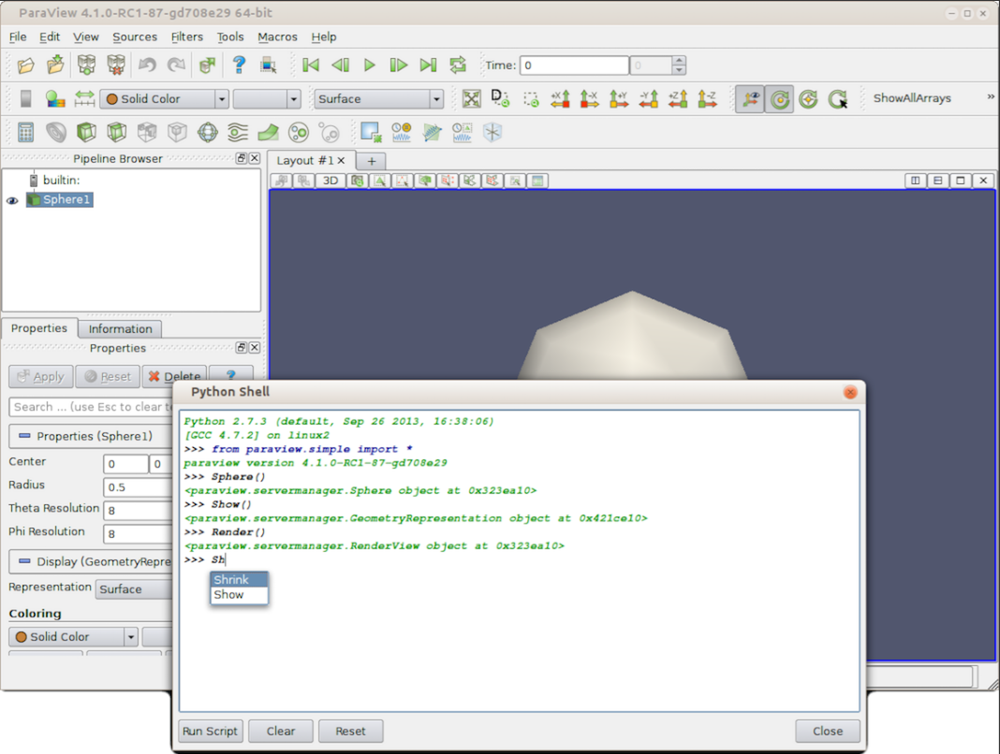

PVpython
pvpython is the standalone Python interpreter executable bundled directly with ParaView. It pre-loads ParaView’s libraries (such as paraview.simple), allowing you to run ParaView scripts in “headless” mode without launching the graphical user interface (GUI).
{kind=link}

Key Use Cases
Batch Data Processing: Automatically process hundreds of simulation output files (e.g., slicing, computing derivatives, exporting CSVs) in loop scripts on a cluster.
Off-Screen Image & Movie Generation: Render 3D visualizations, screenshots, and animations on remote high-performance computing (HPC) nodes that lack a desktop environment.
Script Trace Execution: Run scripts generated by ParaView’s “Trace” feature—where actions performed in the desktop GUI are recorded directly into Python code.
Basic Example Script
A typical script run via pvptyhon my_script.py looks like this:
from paraview.simple import *
# Create a source (sphere)
sphere = Sphere()
# Apply a filter (elevation)
elevation = Elevation(Input=sphere)
# Render and save an image off-screen
renderView = GetActiveViewOrCreate('RenderView')
Show(elevation, renderView)
SaveScreenshot('output.png', renderView)